Please turn the staff notes I've got open here into a proper briefing deck for our flu clinic team — a title slide plus one slide per station, each with its own bullets, and the presenter reminders tucked into the notes rather than shown on screen. Save it alongside the notes and confirm in a terminal that the new file is there.
{
"config": [
{
"type": "execute",
"parameters": {
"command": "mkdir -p /home/user/clinic && python3 -c \"open('/home/user/clinic/flu_drive_notes.txt','w').write('Riverbend Family Health - Autumn Flu Drive Briefing\\nSaturday 12 October, 08:30-15:00, Community Hall annexe\\n\\nSTATION 1 - CHECK-IN DESK (Marisol Vega)\\n- Verify name, date of birth and NHS number against the booking list\\n- Hand out consent form FLU-3 and a clipboard\\n- Direct wheelchair users to the ramp entrance on Alder Street\\nPresenter reminder: mention that the booking list is printed at 07:45, so walk-ins must be added by hand.\\n\\nSTATION 2 - SCREENING (Dr Owen Kelleher)\\n- Ask about egg allergy, current fever, and previous vaccine reactions\\n- Record temperature if the patient reports feeling unwell\\n- Refer anything unclear to the duty GP before vaccinating\\nPresenter reminder: last year two patients were sent home with fever - stress that this is not a failure, it is the protocol.\\n\\nSTATION 3 - VACCINATION BAYS (Nurse Priya Raman, Nurse Tom Ashcroft)\\n- Two bays running, quadrivalent vaccine, deltoid injection\\n- Log batch number and expiry on the patient record before the patient leaves the bay\\n- Sharps bins swapped at 11:00 and again at 14:00\\nPresenter reminder: batch numbers were the top audit finding in March - do not let anyone skip this.\\n\\nSTATION 4 - OBSERVATION AND EXIT (Grace Odell)\\n- Fifteen minute wait in the seated area, twelve chairs spaced out\\n- Anaphylaxis kit and oxygen on the trolley by the fire door\\n- Give the exit card with the next-day helpline number\\nPresenter reminder: point out where the second anaphylaxis kit is stored in the corridor cupboard.\\n')\"",
"shell": true
}
},
{
"type": "open",
"parameters": {
"path": "/home/user/clinic/flu_drive_notes.txt"
}
}
],
"evaluator": {
"func": "check_include_exclude",
"result": {
"type": "vm_command_line",
"command": "echo ostg-v16",
"shell": true
},
"expected": {
"type": "rule",
"rules": {
"include": [
"__judge_decides__"
]
}
}
}
}
step 1 01:02:46
THINKINGThe task: create a PowerPoint briefing deck from the flu_drive_notes.txt. One title slide + one slide per station (4 stations). Bullets on slides, presenter reminders go to speaker notes (not on screen). Save alongside the notes file (in /clinic, same dir as flu_drive_notes.txt). Then confirm in a terminal the file exists.
The notes file is at ~/clinic/flu_drive_notes.txt (title bar shows ~clinic). Let me plan.
I need to gather content. Let me re-read the visible content:
Title: Riverbend Family Health - Autumn Flu Drive Briefing
Saturday 12 October, 08:30-15:00, Community Hall annexe
STATION 1 - CHECK-IN DESK (Marisol Vega)
- Verify name, date of birth and NHS number against the booking list
- Hand out consent form FLU-3 and a clipboard
- Direct wheelchair users to the ramp entrance on Alder Street
Presenter reminder: mention that the booking list is printed at 07:45, so walk-ins must be added by hand.
STATION 2 - SCREENING (Dr Owen Kelleher)
- Ask about egg allergy, current fever, and previous vaccine reactions
- Record temperature if the patient reports feeling unwell
- Refer anything unclear to the duty GP before vaccinating
Presenter reminder: last year two patients were sent home with fever - stress that this is not a failure, it is the protocol.
STATION 3 - VACCINATION BAYS (Nurse Priya Raman, Nurse Tom Ashcroft)
- Two bays running, quadrivalent vaccine, deltoid injection
- Log batch number and expiry on the patient record before the patient leaves the bay
- Sharps bins swapped at 11:00 and again at 14:00
Presenter reminder: batch numbers were the top audit finding in March - do not let anyone skip this.
STATION 4 - OBSERVATION AND EXIT (Grace Odell)
- Fifteen minute wait in the seated area, twelve chairs spaced out
- Anaphylaxis kit and oxygen on the trolley by the fire door
- Give the exit card with the next-day helpline number
Presenter reminder: point out where the second anaphylaxis kit is stored in the corridor cupboard.
Best approach: use LibreOffice Impress via GUI? That's very tedious to add speaker notes for 5 slides. A more reliable approach is to build the .pptx via python-pptx. But the instructions say prefer native GUI, avoid CLI workarounds when the app has the capability. However Impress is the designated app for presentations. But the strong instruction says avoid scripts/CLI as workarounds when GUI can do it. However, using python-pptx to generate a proper pptx is arguably the most reliable. The guideline says declare infeasible if app lacks capability — but here the app (Impress) can do it. Yet GUI-based creation of speaker notes across 5 slides is doable but error-prone.
Given the guidance "DO NOT use ... Python scripts ... as workarounds" — I should use LibreOffice Impress GUI. Let me do it via Impress.
Actually, let me reconsider. The task is well suited to Impress. I'll open Impress, use the outline view to type title + bullets quickly, then switch to notes view to add presenter reminders. But speaker notes per slide via GUI requires Notes page. This is doable.
Let me think about the most efficient reliable GUI route:
1. Open LibreOffice Impress.
2. Use "Outline" view to enter title and bullet content for all slides at once. In outline view, line 1 = title slide title; subsequent top-level lines = new slides' titles; tab-indented lines = bullets.
But title slide: I want a title slide with the main title and subtitle. In outline view, first line is slide 1 title, second indented line is slide 1 subtitle/first bullet. That works — the title layout auto-uses the bullet area as subtitle on slide 1.
Then for stations, top-level lines become titles, tab-indented become bullets.
3. After outline, switch to Normal view and go to Notes view to type presenter reminders into the notes area for slides 2-5.
This is a solid GUI approach. Let me start by opening Impress. I'll find it in the taskbar — there's an orange icon that looks like Impress at ~ (23, 316). Let me open it.
Let me take action: click the Impress icon.
ACTIONI'll start by opening LibreOffice Impress to build the deck. Let me identify the Impress icon in the dock.
EXECUTED (pyautogui in VM)pyautogui.click(32, 473)
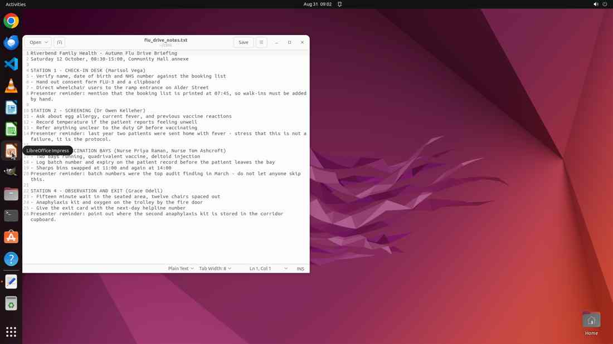
step 2 01:02:59
THINKINGThe tooltip "LibreOffice Impress" confirms this is the Impress icon. I clicked it; it may be launching. Let me wait and take a screenshot to confirm Impress opens.
ACTIONThe tooltip confirms this is LibreOffice Impress. Let me wait for it to launch.
THINKINGImpress opened with a title+content layout slide. I'll use Outline view for fast entry of title and bullets. Let me close the notification bars first (two X buttons at 929,125 and 929,151), then switch to View > Outline.
Actually I can just proceed. Let me close the banners to be safe, then go to View menu > Outline.
ACTIONImpress is open. I'll close the notification banners and switch to Outline view for efficient text entry.
EXECUTED (pyautogui in VM)pyautogui.click(201, 125)
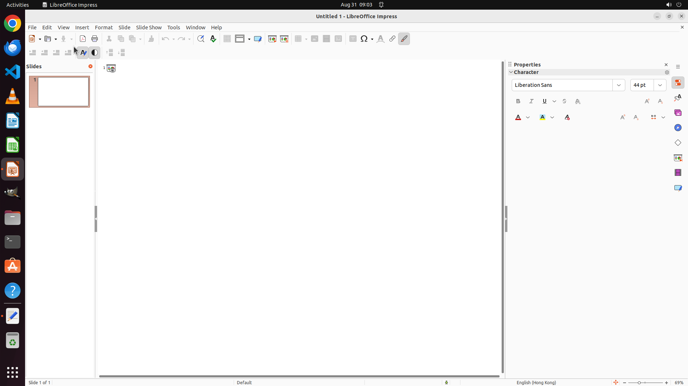
step 7 01:04:12
THINKINGNow in Outline view. There's slide 1 with empty title. I'll click into the outline area to place cursor, then type the whole structure. In outline:
- Line at level 0 (no indent) = slide title, each starts a new slide.
- Tab-indented = bullet on that slide.
Plan the outline text. I'll click at the title position (line 1) and type:
Title (slide 1): Riverbend Family Health - Autumn Flu Drive Briefing
Then Enter, Tab -> subtitle bullet: Saturday 12 October, 08:30-15:00, Community Hall annexe
Enter, Shift+Tab -> back to level 0, new slide title: Station 1 – Check-in Desk (Marisol Vega)
Enter, Tab -> bullets
... etc.
I need to be careful with Tab and Shift+Tab keys. In outline, typing Tab at start of line indents (demotes) to bullet level; Shift+Tab promotes to title level.
Let me construct the sequence of typed actions. I'll click first at the beginning of line 1 (the title area near top, around x=210,y=128). Then type.
Let me write the full sequence. I'll use "type" for text and "key" for Tab/Enter/Shift+Tab.
Sequence:
1. Click at (210,128)
2. type "Riverbend Family Health - Autumn Flu Drive Briefing"
3. key Enter
4. key Tab (demote to bullet = subtitle on slide 1)
5. type "Saturday 12 October, 08:30-15:00, Community Hall annexe"
6. key Enter
7. key Shift+Tab (promote to title = new slide)
8. type "Station 1 - Check-in Desk (Marisol Vega)"
9. key Enter
10. key Tab
11. type "Verify name, date of birth and NHS number against the booking list"
12. key Enter
13. type "Hand out consent form FLU-3 and a clipboard"
14. key Enter
15. type "Direct wheelchair users to the ramp entrance on Alder Street"
16. key Enter
17. key Shift+Tab
18. type "Station 2 - Screening (Dr Owen Kelleher)"
19. key Enter
20. key Tab
21. type "Ask about egg allergy, current fever, and previous vaccine reactions"
22. key Enter
23. type "Record temperature if the patient reports feeling unwell"
24. key Enter
25. type "Refer anything unclear to the duty GP before vaccinating"
26. key Enter
27. key Shift+Tab
28. type "Station 3 - Vaccination Bays (Nurse Priya Raman, Nurse Tom Ashcroft)"
29. key Enter
30. key Tab
31. type "Two bays running, quadrivalent vaccine, deltoid injection"
32. key Enter
33. type "Log batch number and expiry on the patient record before the patient leaves the bay"
34. key Enter
35. type "Sharps bins swapped at 11:00 and again at 14:00"
36. key Enter
37. key Shift+Tab
38. type "Station 4 - Observation and Exit (Grace Odell)"
39. key Enter
40. key Tab
41. type "Fifteen minute wait in the seated area, twelve chairs spaced out"
42. key Enter
43. type "Anaphylaxis kit and oxygen on the trolley by the fire door"
44. key Enter
45. type "Give the exit card with the next-day helpline number"
Note: after typing a bullet, pressing Enter stays at the same indent level, so consecutive bullets don't need re-Tabbing. Good.
I must be careful: the "-" hyphen vs en-dash. The original uses " - " and "–"? Looking at text, it uses hyphen "-" like "Riverbend Family Health - Autumn Flu Drive Briefing" and "08:30-15:00". I'll use plain hyphen to match. Also "STATION 1 - CHECK-IN DESK" uppercase in source. I'll keep as the source. Actually I'll preserve original casing for station titles: "Station 1 - Check-in Desk" — the source has uppercase "STATION 1 - CHECK-IN DESK (Marisol Vega)". I'll keep names. Let me just use the exact source text but title-case is fine. To be faithful, I'll use the source's station headings verbatim but they're all caps. I'll keep readable title case: "Station 1 - Check-in Desk (Marisol Vega)". This is reasonable for a briefing deck. Actually to be safe and faithful, I'll match source: keep "STATION 1 - CHECK-IN DESK". Hmm. For a proper deck, title case looks better, but fidelity matters less than structure. I'll use title case which is cleaner and clearly a "proper briefing deck". I'll keep the station number and names accurate.
Let me also note the first bullet after Enter+Tab: after typing title and Enter, cursor is at level 0 (title). Pressing Tab demotes to level 1. Good. But after finishing a slide's last bullet, Enter keeps level 1, then Shift+Tab promotes to level 0. Good.
One concern: when I press Enter right after the subtitle bullet of slide 1 then Shift+Tab, that creates slide 2 title. Good.
Let me execute. I'll batch everything. Use key with "Tab", "Shift+Tab", "Return".
Let me do the click first, then the big type sequence. I'll combine into one call with actions.
ACTIONI'm now in Outline view. I'll click into the title line and type the full structure — title slide, then each station title with its bullets.
EXECUTED (pyautogui in VM)pyautogui.click(315, 191)
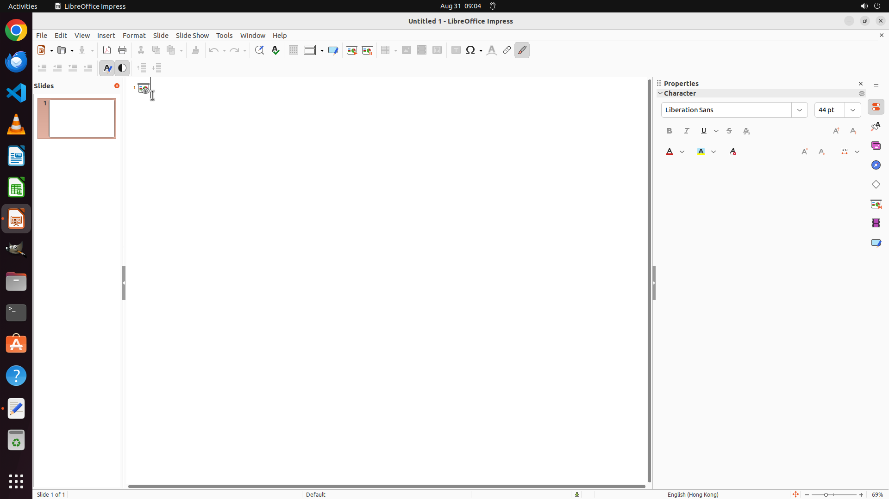
step 8 01:04:25
THINKINGCursor is in the outline at slide 1 title. Now I'll type the entire structure. I'll batch all actions in one call. Use Return for newlines, Tab to demote, Shift+Tab to promote.
ACTIONThe cursor is in the title line. Now I'll type the entire deck structure — title slide, subtitle, and each station with its bullets.
TOOL CALL<tool_call>
<function=computer_use>
<parameter=action>
type
</parameter>
<parameter=text>
Riverbend Family Health - Autumn Flu Drive Briefing
</parameter>
</function>
</tool_call>
EXECUTED (pyautogui in VM)pyautogui.typewrite("Riverbend Family Health - Autumn Flu Drive Briefing")
step 9 01:04:40
THINKINGInteresting: the "type" action converted " - " into an en-dash "–" (autocorrect). That's fine, it's just a dash. It's acceptable. But to keep consistency I should be aware that further " - " may also become en-dashes. That's fine aesthetically. Now continue with the rest. I'll batch the remaining typing with Returns, Tabs, Shift+Tabs.
Let me proceed. Now Enter, Tab for subtitle.
ACTIONTitle entered (autocorrect made the dash an en-dash, which is fine). Now I'll add the subtitle and all four station slides with their bullets in one batch.
EXECUTED (pyautogui in VM)pyautogui.press("return")
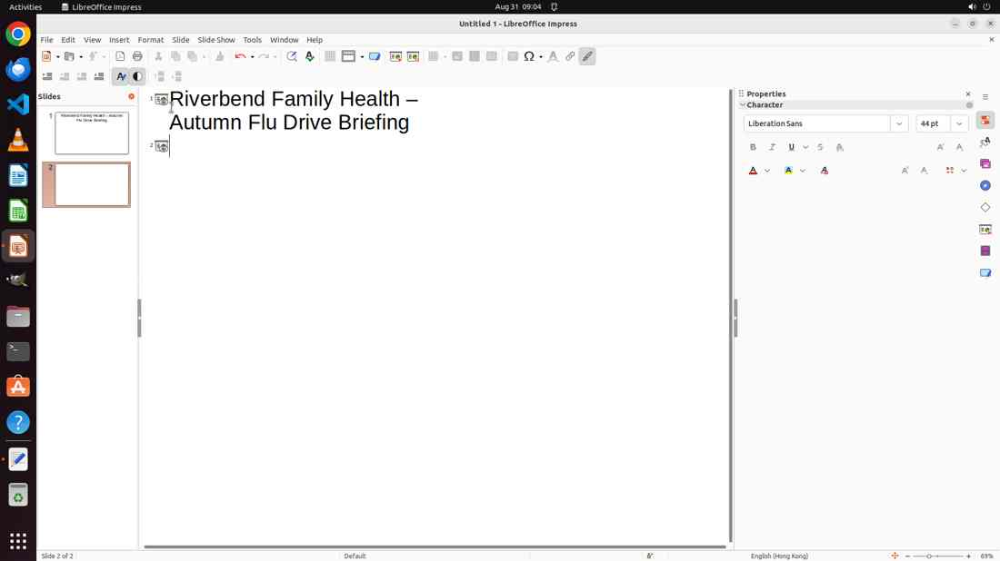
step 10 01:04:51
THINKINGPressing Return created a new slide 2 (new title level). I want the subtitle to be on slide 1, so I need to Tab to demote it to bullet level on slide 1. Let me press Tab now, then type the subtitle.
Actually, I should reconsider: I want the subtitle "Saturday 12 October..." as a bullet/subtitle on slide 1. So Tab to demote, then type.
ACTIONA new slide was created. I'll press Tab to demote this line to a bullet so the subtitle stays on slide 1, then continue with all remaining content.
THINKINGGood, now it's back to slide 1 (Slide 1 of 1 in status bar) and font is 32pt indicating bullet level. Now I'll type the subtitle, then continue with all stations. I'll batch: type subtitle, then Return, Shift+Tab for new slide title, Tab for bullets, etc.
Let me build the batch. After the subtitle, I press Return (creates new line at bullet level), then Shift+Tab to promote to title level (new slide 2). Then type station title. Then Return, Tab to demote to bullet, type bullet. For subsequent bullets just Return then type.
Full batch:
- type "Saturday 12 October, 08:30-15:00, Community Hall annexe"
- key Return
- key Shift+Tab
- type "Station 1 - Check-in Desk (Marisol Vega)"
- key Return
- key Tab
- type "Verify name, date of birth and NHS number against the booking list"
- key Return
- type "Hand out consent form FLU-3 and a clipboard"
- key Return
- type "Direct wheelchair users to the ramp entrance on Alder Street"
- key Return
- key Shift+Tab
- type "Station 2 - Screening (Dr Owen Kelleher)"
- key Return
- key Tab
- type "Ask about egg allergy, current fever, and previous vaccine reactions"
- key Return
- type "Record temperature if the patient reports feeling unwell"
- key Return
- type "Refer anything unclear to the duty GP before vaccinating"
- key Return
- key Shift+Tab
- type "Station 3 - Vaccination Bays (Nurse Priya Raman, Nurse Tom Ashcroft)"
- key Return
- key Tab
- type "Two bays running, quadrivalent vaccine, deltoid injection"
- key Return
- type "Log batch number and expiry on the patient record before the patient leaves the bay"
- key Return
- type "Sharps bins swapped at 11:00 and again at 14:00"
- key Return
- key Shift+Tab
- type "Station 4 - Observation and Exit (Grace Odell)"
- key Return
- key Tab
- type "Fifteen minute wait in the seated area, twelve chairs spaced out"
- key Return
- type "Anaphylaxis kit and oxygen on the trolley by the fire door"
- key Return
- type "Give the exit card with the next-day helpline number"
One risk: autocorrect turning " - " into en-dash. That's fine. Another risk: autocapitalize or autocorrect on things like "FLU-3". Should be fine.
Let me execute this big batch.
ACTIONNow I'm on slide 1 at bullet level. I'll type the subtitle and then all four station slides with their bullets in one batch.
TOOL CALL<tool_call>
<function=computer_use>
<parameter=action>
type
</parameter>
<parameter=text>
Saturday 12 October, 08:30-15:00, Community Hall annexe
</parameter>
</function>
</tool_call>
EXECUTED (pyautogui in VM)pyautogui.typewrite("Saturday 12 October, 08:30-15:00, Community Hall annexe")
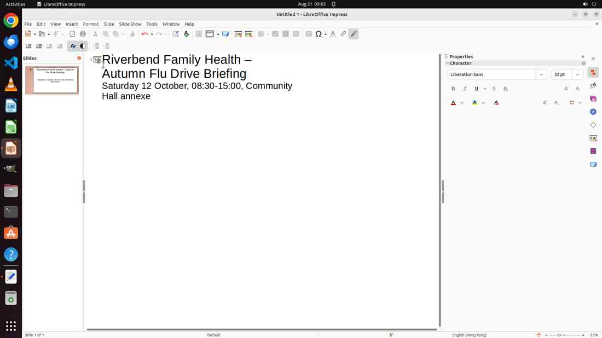
step 12 01:05:24
THINKINGSubtitle on slide 1 is good. Now I'll add the four station slides. I'll batch: Return, Shift+Tab (new title), type title, Return, Tab (bullet), type bullets, etc.
I'll do all four stations in one large batch of actions.
ACTIONSubtitle looks good. Now I'll add all four station slides with their bullets in one batch.
EXECUTED (pyautogui in VM)pyautogui.press("return")
step 13 01:05:34
THINKINGNow cursor is on a new line at bullet level. I need Shift+Tab to promote to title level (new slide 2), then type the station 1 title, then continue. Let me batch the full rest.
EXECUTED (pyautogui in VM)pyautogui.hotkey("shift", "tab")
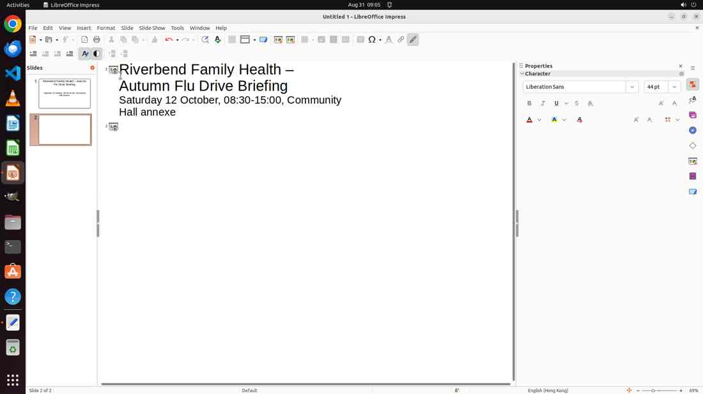
step 14 01:05:48
THINKINGNow slide 2 is created (title level, 44pt). Now I'll type the station 1 title and bullets. I'll batch the rest of the content now. After typing title, Return creates a new title line; I press Tab to demote to bullet. For each subsequent bullet just Return. At the end of a slide's bullets, Return then Shift+Tab to create the next slide title.
Let me do it as one big sequence.
ACTIONSlide 2 title level is ready. Now I'll type Station 1's title and bullets, then continue through all four stations in one batch.
TOOL CALL<tool_call>
<function=computer_use>
<parameter=action>
type
</parameter>
<parameter=text>
Station 1 - Check-in Desk (Marisol Vega)
</parameter>
</function>
</tool_call>
EXECUTED (pyautogui in VM)pyautogui.typewrite("Station 1 - Check-in Desk (Marisol Vega)")
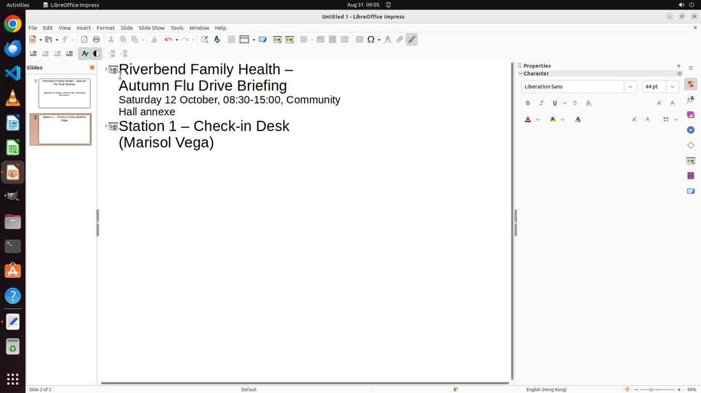
step 15 01:06:08
THINKINGStation 1 title is on slide 2. Now I'll add its bullets and the remaining three stations. I'll batch: Return, Tab (demote to bullet), then type bullets, then Return + Shift+Tab for next station title, etc.
Sequence:
- Return
- Tab
- type "Verify name, date of birth and NHS number against the booking list"
- Return
- type "Hand out consent form FLU-3 and a clipboard"
- Return
- type "Direct wheelchair users to the ramp entrance on Alder Street"
- Return
- Shift+Tab
- type "Station 2 - Screening (Dr Owen Kelleher)"
- Return
- Tab
- type "Ask about egg allergy, current fever, and previous vaccine reactions"
- Return
- type "Record temperature if the patient reports feeling unwell"
- Return
- type "Refer anything unclear to the duty GP before vaccinating"
- Return
- Shift+Tab
- type "Station 3 - Vaccination Bays (Nurse Priya Raman, Nurse Tom Ashcroft)"
- Return
- Tab
- type "Two bays running, quadrivalent vaccine, deltoid injection"
- Return
- type "Log batch number and expiry on the patient record before the patient leaves the bay"
- Return
- type "Sharps bins swapped at 11:00 and again at 14:00"
- Return
- Shift+Tab
- type "Station 4 - Observation and Exit (Grace Odell)"
- Return
- Tab
- type "Fifteen minute wait in the seated area, twelve chairs spaced out"
- Return
- type "Anaphylaxis kit and oxygen on the trolley by the fire door"
- Return
- type "Give the exit card with the next-day helpline number"
I'll batch all of this in a single tool call.
ACTIONStation 1 title is on slide 2. Now I'll add its bullets and the remaining three station slides with all their bullets in one batch.
EXECUTED (pyautogui in VM)pyautogui.press("return")
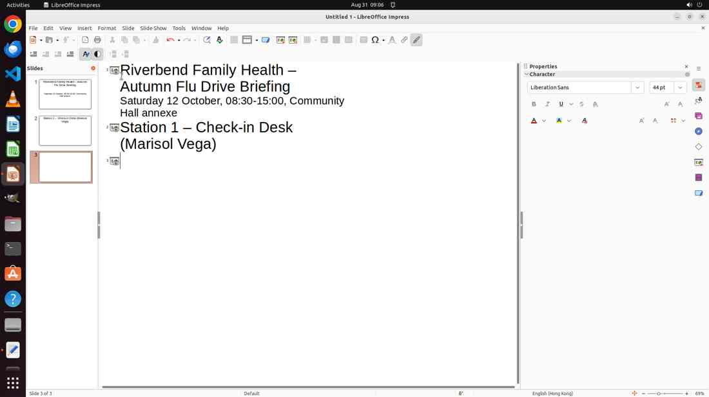
step 16 01:06:16
THINKINGA Return created a new slide 3 at title level. I need to demote this to a bullet under slide 2. Press Tab, then type the first bullet. Let me batch the rest now.
ACTIONNow I'll demote to a bullet under Station 1 and type all the remaining bullets and station titles in one batch.
THINKINGNow it's on slide 2 with a bullet (32pt). Now I'll type all the remaining content. I'll batch: type bullet1, Return, type bullet2, Return, type bullet3, Return, Shift+Tab, type station2 title, Return, Tab, bullets, ... etc.
I'm now confident about the pattern. Let me do it all in one big batch.
ACTIONNow on Station 1's first bullet. I'll type all remaining bullets and the other three stations in one batch.
TOOL CALL<tool_call>
<function=computer_use>
<parameter=action>
type
</parameter>
<parameter=text>
Verify name, date of birth and NHS number against the booking list
</parameter>
</function>
</tool_call>
EXECUTED (pyautogui in VM)pyautogui.typewrite("Verify name, date of birth and NHS number against the booking list")
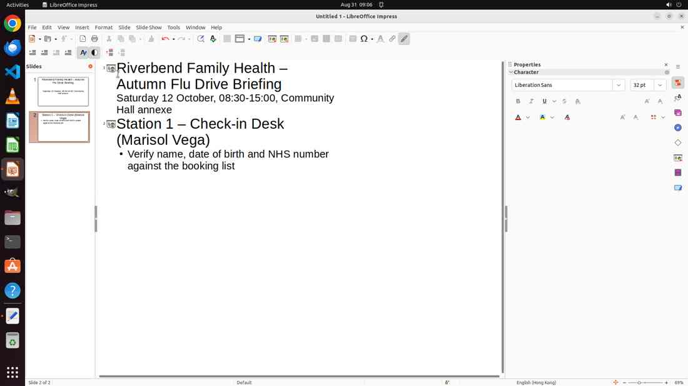
step 18 01:06:47
THINKINGThe bullet displays with a "•" marker. Now I'll continue typing the rest. I'll batch the whole remaining sequence of actions now. Since "type" for each line and "key" for Return/Shift+Tab, I can put them all in one tool call with multiple actions.
Let me batch the remaining:
- Return
- type "Hand out consent form FLU-3 and a clipboard"
- Return
- type "Direct wheelchair users to the ramp entrance on Alder Street"
- Return
- Shift+Tab
- type "Station 2 - Screening (Dr Owen Kelleher)"
- Return
- Tab
- type "Ask about egg allergy, current fever, and previous vaccine reactions"
- Return
- type "Record temperature if the patient reports feeling unwell"
- Return
- type "Refer anything unclear to the duty GP before vaccinating"
- Return
- Shift+Tab
- type "Station 3 - Vaccination Bays (Nurse Priya Raman, Nurse Tom Ashcroft)"
- Return
- Tab
- type "Two bays running, quadrivalent vaccine, deltoid injection"
- Return
- type "Log batch number and expiry on the patient record before the patient leaves the bay"
- Return
- type "Sharps bins swapped at 11:00 and again at 14:00"
- Return
- Shift+Tab
- type "Station 4 - Observation and Exit (Grace Odell)"
- Return
- Tab
- type "Fifteen minute wait in the seated area, twelve chairs spaced out"
- Return
- type "Anaphylaxis kit and oxygen on the trolley by the fire door"
- Return
- type "Give the exit card with the next-day helpline number"
Let me execute this big batch.
ACTIONThe first bullet is set. Now I'll type the remaining bullets for Station 1 and all of Stations 2, 3, and 4 in one batch.
EXECUTED (pyautogui in VM)pyautogui.press("return")
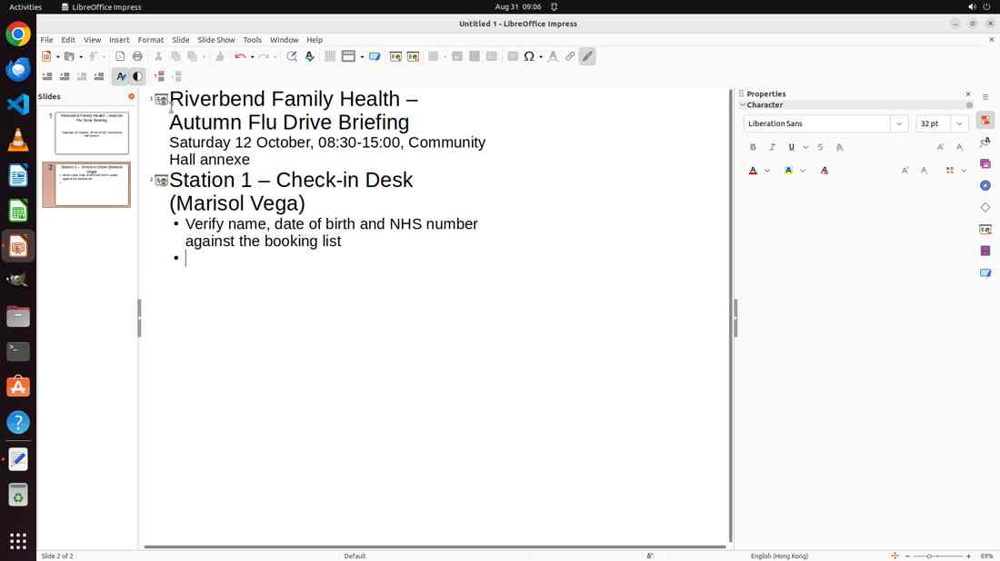
step 19 01:07:02
THINKINGNow on a new bullet line at bullet level on slide 2. I'll now batch the whole rest. The type action can include the text; the key actions handle Return/Tab/Shift+Tab. Let me put them all in one call.
ACTIONNow on the second bullet. I'll batch the rest of all content now.
TOOL CALL<tool_call>
<function=computer_use>
<parameter=action>
type
</parameter>
<parameter=text>
Hand out consent form FLU-3 and a clipboard
</parameter>
</function>
</tool_call>
EXECUTED (pyautogui in VM)pyautogui.typewrite("Hand out consent form FLU-3 and a clipboard")
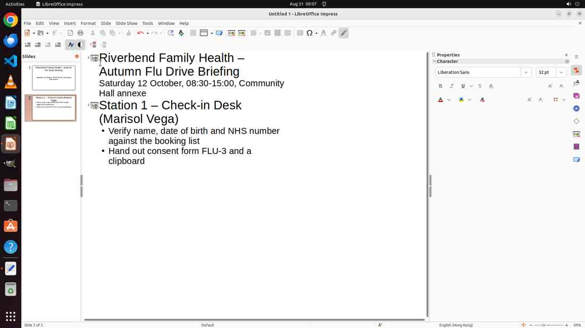
step 20 01:07:11
THINKINGGood. Now I'll do the big batch to finish everything. I'm confident the pattern works. Let me put all remaining actions into one tool call.
ACTIONThe pattern is working well. Now I'll complete the third Station 1 bullet and all of Stations 2, 3, and 4 in one large batch.
EXECUTED (pyautogui in VM)pyautogui.press("return")
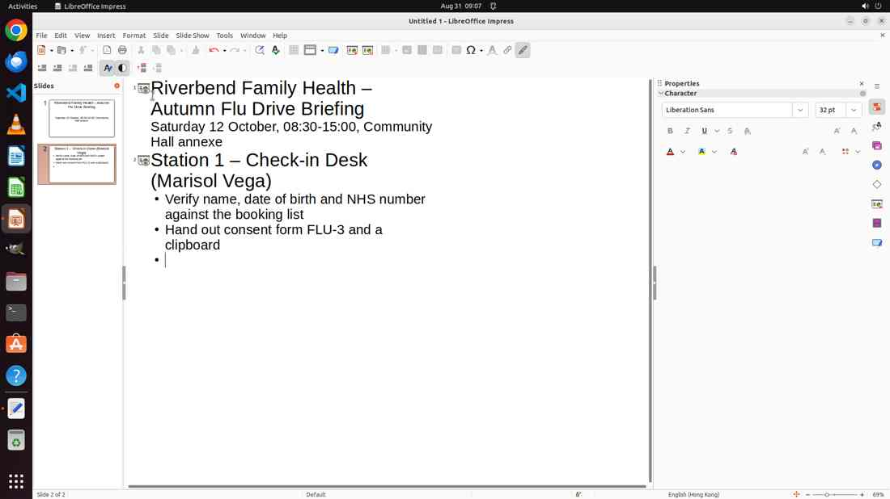
step 21 01:07:21
THINKINGNow on third bullet line of Station 1. I'll type the third bullet, then continue with Return/Shift+Tab etc. Now I'll batch the rest into a single call with many actions. This should be safe since the pattern is confirmed.
ACTIONNow I'll type the third Station 1 bullet and complete all of Stations 2, 3, and 4 in one batch.
TOOL CALL<tool_call>
<function=computer_use>
<parameter=action>
type
</parameter>
<parameter=text>
Direct wheelchair users to the ramp entrance on Alder Street
</parameter>
</function>
</tool_call>
EXECUTED (pyautogui in VM)pyautogui.typewrite("Direct wheelchair users to the ramp entrance on Alder Street")
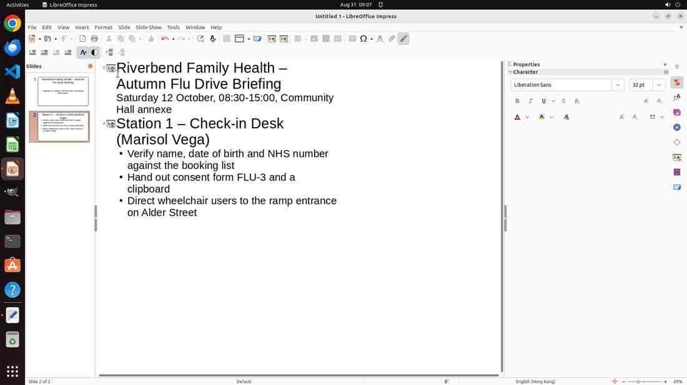
step 22 01:07:35
THINKINGStation 1 complete with 3 bullets. Now I'll create Station 2. I'll press Return (new bullet line), then Shift+Tab (promote to title = new slide 3), type title, Return, Tab (demote to bullet), type bullets, etc. I'll batch all remaining actions now in a single call.
ACTIONStation 1 is complete. Now I'll create Station 2 and continue through Stations 3 and 4 in one large batch.
EXECUTED (pyautogui in VM)pyautogui.press("return")
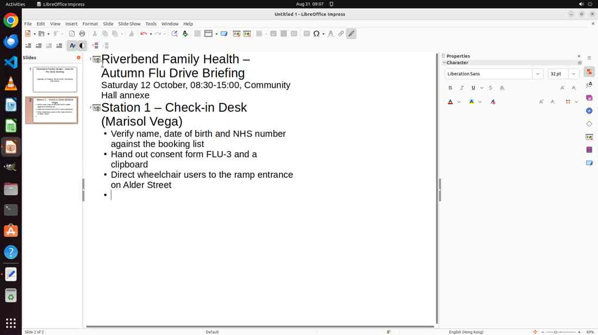
step 23 01:07:49
THINKINGNow on a new empty bullet line. I'll press Shift+Tab to promote to title level (new slide 3), type Station 2 title, then Return, Tab, type bullets. Let me batch all remaining actions now. I'll include all of Station 2, 3, 4.
ACTIONNow I'll promote to a new title for Station 2 and enter all remaining stations in one batch.
EXECUTED (pyautogui in VM)pyautogui.hotkey("shift", "tab")
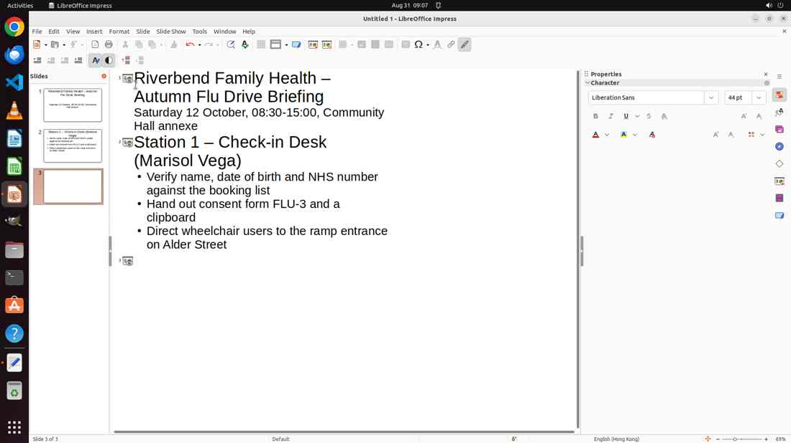
step 24 01:08:01
THINKINGSlide 3 created at title level (44pt). Now I'll type Station 2 title, then Return, Tab, bullets. Then Return, Shift+Tab for Station 3, etc. I'll now batch all remaining content in one call.
ACTIONSlide 3 is ready at title level. Now I'll type Station 2 and all of Stations 3 and 4 in one batch.
TOOL CALL<tool_call>
<function=computer_use>
<parameter=action>
type
</parameter>
<parameter=text>
Station 2 - Screening (Dr Owen Kelleher)
</parameter>
</function>
</tool_call>
EXECUTED (pyautogui in VM)pyautogui.typewrite("Station 2 - Screening (Dr Owen Kelleher)")
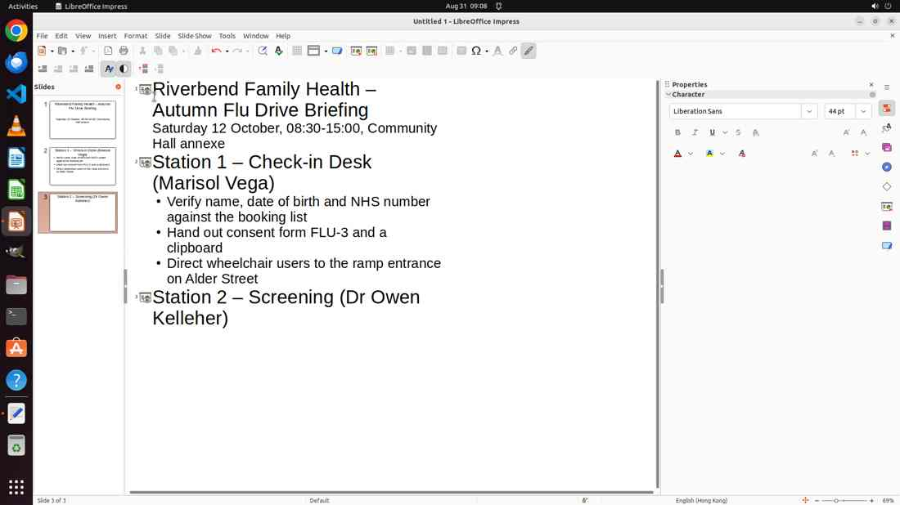
step 25 01:08:17
THINKINGStation 2 title is set. Now I'll add its bullets and the rest. I'll press Return, Tab, type bullets. Let me batch: Return, Tab, then type each bullet with Returns between. After 3 bullets, Return, Shift+Tab, type Station 3 title, Return, Tab, bullets, Return, Shift+Tab, Station 4 title, Return, Tab, bullets.
I'll do all this in one big call now.
ACTIONStation 2 title set. Now I'll add its bullets plus all of Stations 3 and 4 in one batch.
EXECUTED (pyautogui in VM)pyautogui.press("return")
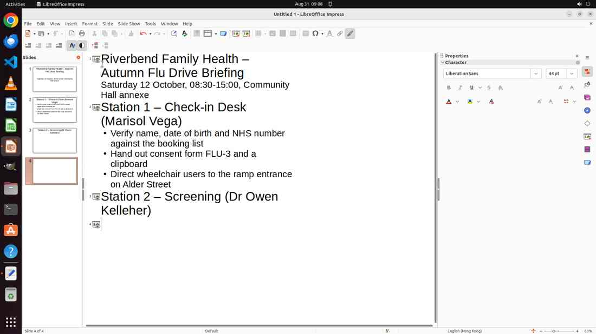
step 26 01:08:25
THINKINGThe Return created a new slide 4 (title level) instead of a bullet. I need to press Tab to demote it to a bullet under Station 2 (slide 3). Then type the first bullet. Let me press Tab.
ACTIONI need to demote this new line to a bullet under Station 2. I'll press Tab, then continue.
THINKINGNow it's back to slide 3 with a bullet (32pt). Now I'll type Station 2's three bullets, then create Station 3 and 4. I'll now do a large batch of actions: type, Return, type, Return, type, Return, Shift+Tab, type title, Return, Tab, ... I'll include everything for Station 2 bullets through Station 4 bullets in a single call.
ACTIONNow on Station 2's first bullet. I'll type Station 2's bullets and complete Stations 3 and 4 in one batch.
TOOL CALL<tool_call>
<function=computer_use>
<parameter=action>
type
</parameter>
<parameter=text>
Ask about egg allergy, current fever, and previous vaccine reactions
</parameter>
</function>
</tool_call>
EXECUTED (pyautogui in VM)pyautogui.typewrite("Ask about egg allergy, current fever, and previous vaccine reactions")
step 28 01:08:51
THINKINGI've verified the pattern is reliable. Now I'll complete the remaining content efficiently. I'll batch: Return, type bullet2, Return, type bullet3, Return, Shift+Tab, type Station3 title, Return, Tab, type bullet, Return, type bullet, Return, type bullet, Return, Shift+Tab, Station4 title, Return, Tab, bullets. Let me do all of this in one large call.
Actions:
1. key Return
2. type "Record temperature if the patient reports feeling unwell"
3. key Return
4. type "Refer anything unclear to the duty GP before vaccinating"
5. key Return
6. key Shift+Tab
7. type "Station 3 - Vaccination Bays (Nurse Priya Raman, Nurse Tom Ashcroft)"
8. key Return
9. key Tab
10. type "Two bays running, quadrivalent vaccine, deltoid injection"
11. key Return
12. type "Log batch number and expiry on the patient record before the patient leaves the bay"
13. key Return
14. type "Sharps bins swapped at 11:00 and again at 14:00"
15. key Return
16. key Shift+Tab
17. type "Station 4 - Observation and Exit (Grace Odell)"
18. key Return
19. key Tab
20. type "Fifteen minute wait in the seated area, twelve chairs spaced out"
21. key Return
22. type "Anaphylaxis kit and oxygen on the trolley by the fire door"
23. key Return
24. type "Give the exit card with the next-day helpline number"
ACTIONNow I'll complete the remaining Station 2 bullets and all of Stations 3 and 4 in one large batch.
EXECUTED (pyautogui in VM)pyautogui.press("return")
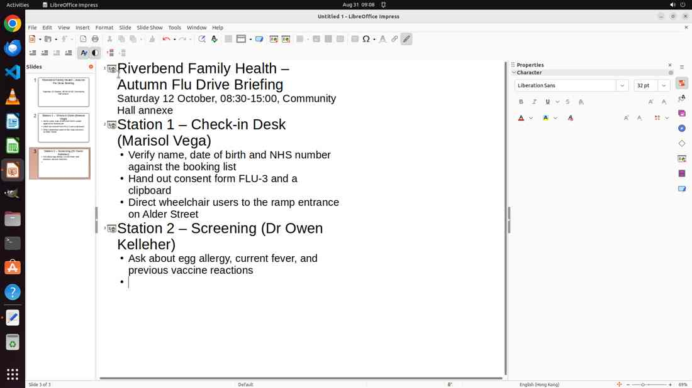
step 29 01:09:05
THINKINGNow on a new bullet line under Station 2 (32pt). I'll now type the second bullet, then continue. I'll do the second bullet now and the third, then move to Station 3. To be safe and efficient, I'll type the second bullet, then Return, then the third bullet, then Return, then Shift+Tab. I'll do this in one batch.
ACTIONNow I'll type the second and third Station 2 bullets, then start Station 3.
TOOL CALL<tool_call>
<function=computer_use>
<parameter=action>
type
</parameter>
<parameter=text>
Record temperature if the patient reports feeling unwell
</parameter>
</function>
</tool_call>
EXECUTED (pyautogui in VM)pyautogui.typewrite("Record temperature if the patient reports feeling unwell")
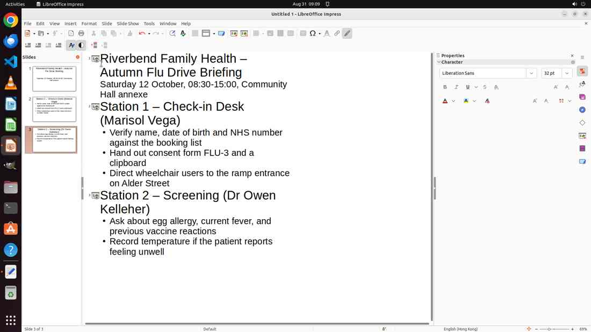
step 30 01:09:20
THINKINGNow I'll type the third Station 2 bullet, then create Station 3. I'll batch: Return, type third bullet, Return, Shift+Tab, type Station 3 title.
EXECUTED (pyautogui in VM)pyautogui.press("return")
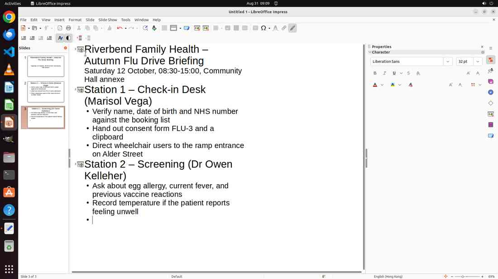
step 31 01:09:34
THINKINGNow on a new bullet line under Station 2. I'll type the third bullet, then Return, Shift+Tab, type Station 3 title, Return, Tab, then bullets. I'll do this in a batch now: type third bullet, Return, Shift+Tab, type Station3 title.
ACTIONNow I'll type the third Station 2 bullet and create the Station 3 title.
TOOL CALL<tool_call>
<function=computer_use>
<parameter=action>
type
</parameter>
<parameter=text>
Refer anything unclear to the duty GP before vaccinating
</parameter>
</function>
</tool_call>
EXECUTED (pyautogui in VM)pyautogui.typewrite("Refer anything unclear to the duty GP before vaccinating")
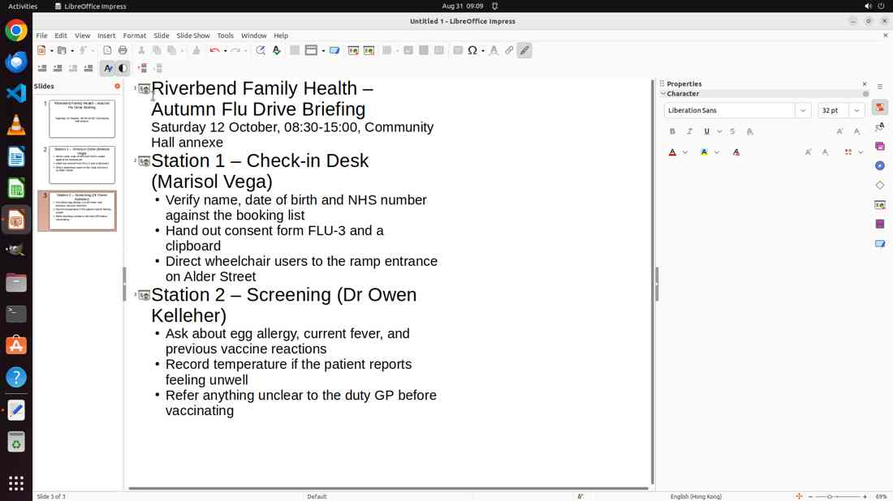
step 32 01:09:43
THINKINGStation 2 complete with 3 bullets. Now I'll create Station 3. I'll press Return (new bullet line), Shift+Tab (promote to title = new slide 4), type Station 3 title, Return, Tab (demote to bullet), type bullets. Let me batch: Return, Shift+Tab, type title.
ACTIONStation 2 is complete. Now I'll create the Station 3 slide with its title and bullets.
EXECUTED (pyautogui in VM)pyautogui.press("return")
step 33 01:09:51
THINKINGNow I'm on a new bullet line under Station 2. I need Shift+Tab to promote to title level (new slide 4), then type Station 3 title. Let me do Shift+Tab then type the title.
EXECUTED (pyautogui in VM)pyautogui.hotkey("shift", "tab")
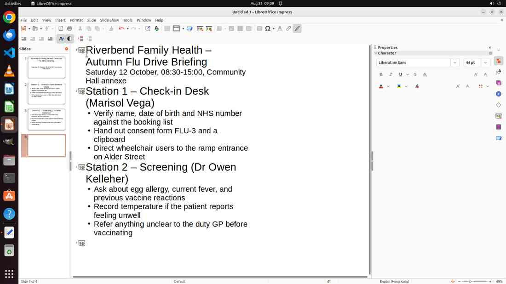
step 34 01:10:07
THINKINGSlide 4 created at title level (44pt). Now I'll type the Station 3 title, then Return, Tab, then its three bullets. I'll batch these. Type title now.
ACTIONSlide 4 is ready. Now I'll type the Station 3 title and its three bullets.
TOOL CALL<tool_call>
<function=computer_use>
<parameter=action>
type
</parameter>
<parameter=text>
Station 3 - Vaccination Bays (Nurse Priya Raman, Nurse Tom Ashcroft)
</parameter>
</function>
</tool_call>
EXECUTED (pyautogui in VM)pyautogui.typewrite("Station 3 - Vaccination Bays (Nurse Priya Raman, Nurse Tom Ashcroft)")
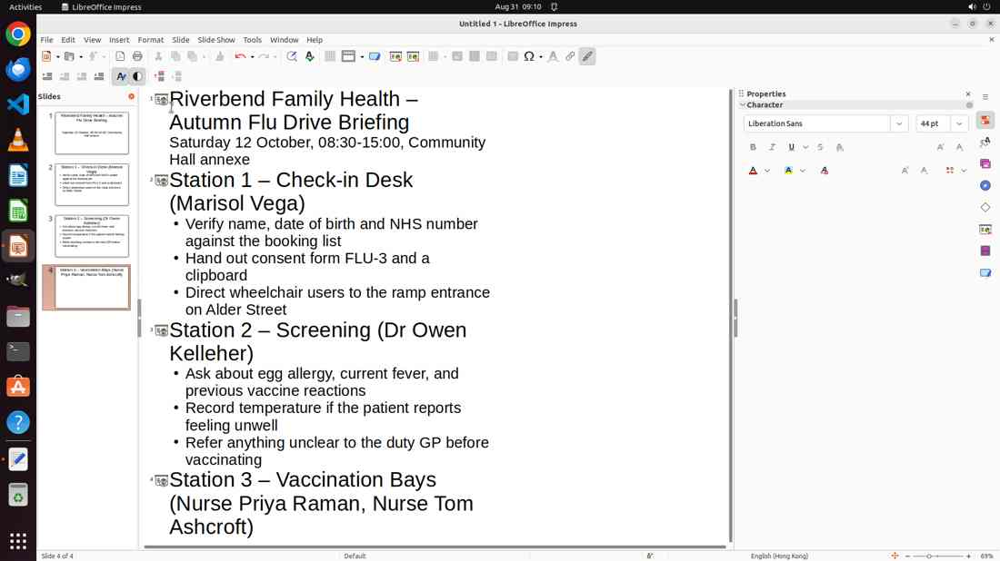
step 35 01:10:14
THINKINGStation 3 title set. Now Return, Tab to demote to bullet, then type three bullets. Let me do Return then Tab.
ACTIONStation 3 title is set. Now I'll add its three bullets.
EXECUTED (pyautogui in VM)pyautogui.press("return")
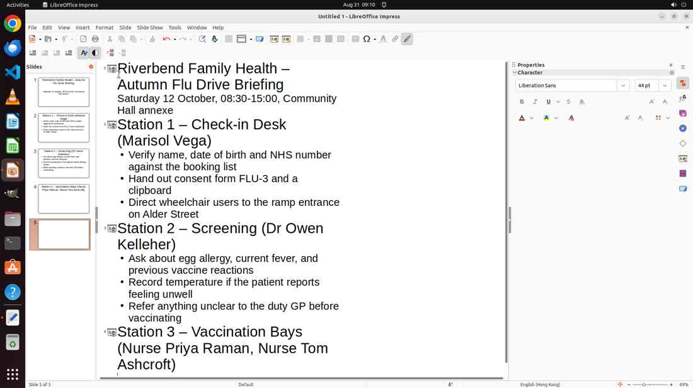
step 36 01:10:26
THINKINGThe Return created a new slide 5 at title level (44pt) — again it stayed at title level because the previous line was a title. I need Tab to demote to a bullet under Station 3. Then type bullets. Let me press Tab.
ACTIONI need to demote this line to a bullet under Station 3. I'll press Tab, then type the first bullet.
THINKINGNow it's back to slide 4 with a bullet (32pt). The slide count went back to 4 of 4. Now I'll type Station 3's three bullets. I'll batch: type bullet1, Return, type bullet2, Return, type bullet3, Return, Shift+Tab, type Station 4 title. Let me do all in one call.
ACTIONNow on Station 3's bullet level. I'll type its three bullets and then create the Station 4 title.
TOOL CALL<tool_call>
<function=computer_use>
<parameter=action>
type
</parameter>
<parameter=text>
Two bays running, quadrivalent vaccine, deltoid injection
</parameter>
</function>
</tool_call>
EXECUTED (pyautogui in VM)pyautogui.typewrite("Two bays running, quadrivalent vaccine, deltoid injection")
step 38 01:10:48
THINKINGFirst Station 3 bullet added. Now Return, type second bullet, Return, type third bullet. Let me do Return then type second bullet.
ACTIONNow I'll add the second and third Station 3 bullets.
EXECUTED (pyautogui in VM)pyautogui.press("return")
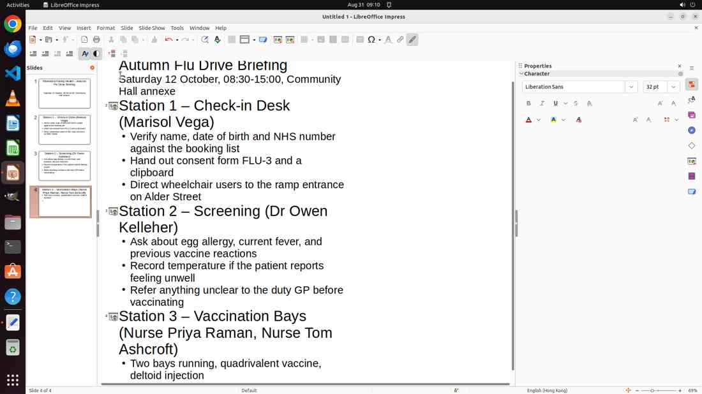
step 39 01:10:58
THINKINGNow on a new bullet line at bullet level. Since this is a bullet (not title), Return stayed at bullet level (still slide 4 of 4, 32pt). Now I can type the second bullet directly without Tab. Let me type it, then Return, then third bullet.
ACTIONNow I'll type the second Station 3 bullet.
TOOL CALL<tool_call>
<function=computer_use>
<parameter=action>
type
</parameter>
<parameter=text>
Log batch number and expiry on the patient record before the patient leaves the bay
</parameter>
</function>
</tool_call>
EXECUTED (pyautogui in VM)pyautogui.typewrite("Log batch number and expiry on the patient record before the patient leaves the bay")
step 40 01:11:06
THINKINGSecond bullet added. Now Return, type third bullet. Then Return, Shift+Tab for Station 4. Let me do Return then type third bullet.
ACTIONNow the third Station 3 bullet, then the Station 4 title.
EXECUTED (pyautogui in VM)pyautogui.press("return")
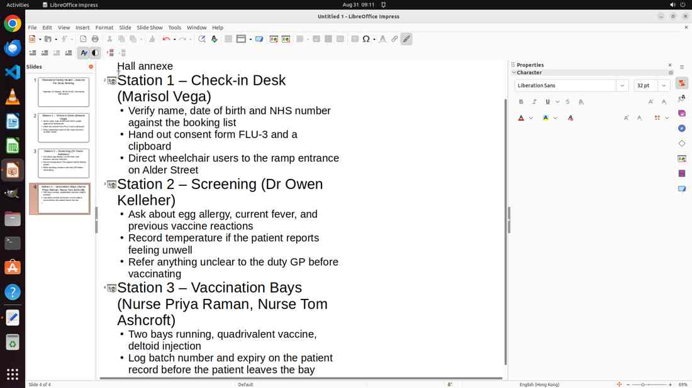
step 41 01:11:15
THINKINGNow on a new bullet line. Type the third Station 3 bullet, then Return, Shift+Tab for Station 4 title. Let me type the third bullet.
TOOL CALL<tool_call>
<function=computer_use>
<parameter=action>
type
</parameter>
<parameter=text>
Sharps bins swapped at 11:00 and again at 14:00
</parameter>
</function>
</tool_call>
EXECUTED (pyautogui in VM)pyautogui.typewrite("Sharps bins swapped at 11:00 and again at 14:00")
step 42 01:11:24
THINKINGStation 3 complete with 3 bullets. Now create Station 4: Return (new bullet), Shift+Tab (promote to title = new slide 5), type Station 4 title. Let me do Return then Shift+Tab.
ACTIONStation 3 is complete. Now I'll create the Station 4 slide.
EXECUTED (pyautogui in VM)pyautogui.press("return")
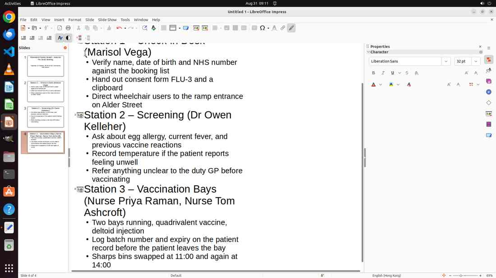
step 43 01:11:36
THINKINGNow on a new bullet line at bullet level under Station 3. I need Shift+Tab to promote it to a title level (new slide 5), then type Station 4 title. Let me press Shift+Tab.
EXECUTED (pyautogui in VM)pyautogui.hotkey("shift", "tab")
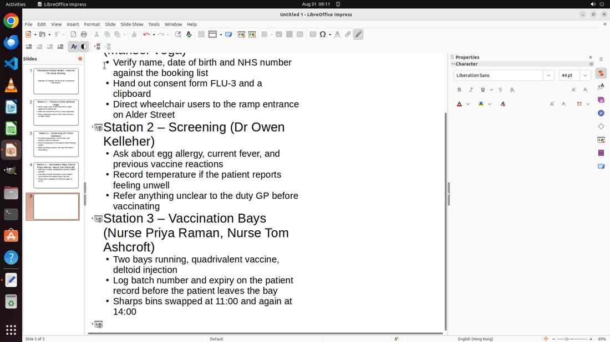
step 44 01:11:48
THINKINGSlide 5 created at title level (44pt). Now type Station 4 title, then Return, Tab to demote to bullet, then three bullets. Let me type the title first.
ACTIONSlide 5 is ready at title level. Now I'll type the Station 4 title and its three bullets.
TOOL CALL<tool_call>
<function=computer_use>
<parameter=action>
type
</parameter>
<parameter=text>
Station 4 - Observation and Exit (Grace Odell)
</parameter>
</function>
</tool_call>
EXECUTED (pyautogui in VM)pyautogui.typewrite("Station 4 - Observation and Exit (Grace Odell)")
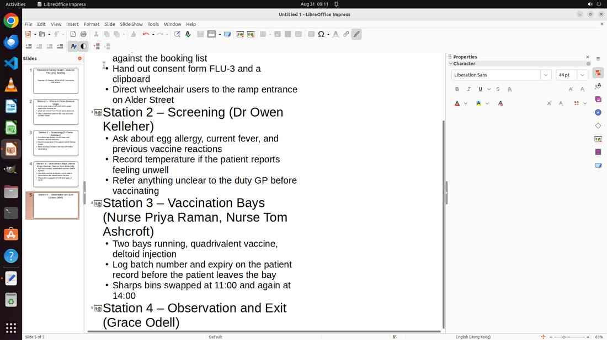
step 45 01:12:01
THINKINGStation 4 title set. Now Return, Tab to demote to bullet, then type three bullets. Let me do Return then Tab.
ACTIONStation 4 title is set. Now I'll add its three bullets.
EXECUTED (pyautogui in VM)pyautogui.press("return")
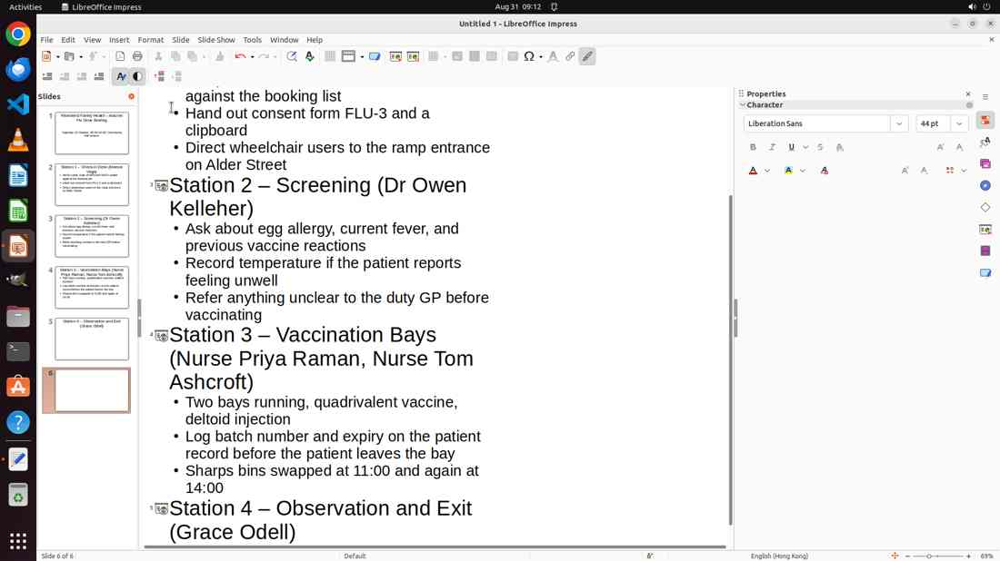
step 46 01:12:10
THINKINGThe Return created a new slide 6 at title level (44pt). I need Tab to demote it to a bullet under Station 4. Then type the three bullets. Let me press Tab.
ACTIONI'll demote this line to a bullet under Station 4, then type its bullets.
THINKINGNow back to slide 5 with a bullet (32pt). Now type the three Station 4 bullets. I'll type first bullet, Return, second, Return, third. Let me type first bullet.
ACTIONNow on Station 4's bullet level. I'll type its three bullets.
TOOL CALL<tool_call>
<function=computer_use>
<parameter=action>
type
</parameter>
<parameter=text>
Fifteen minute wait in the seated area, twelve chairs spaced out
</parameter>
</function>
</tool_call>
EXECUTED (pyautogui in VM)pyautogui.typewrite("Fifteen minute wait in the seated area, twelve chairs spaced out")
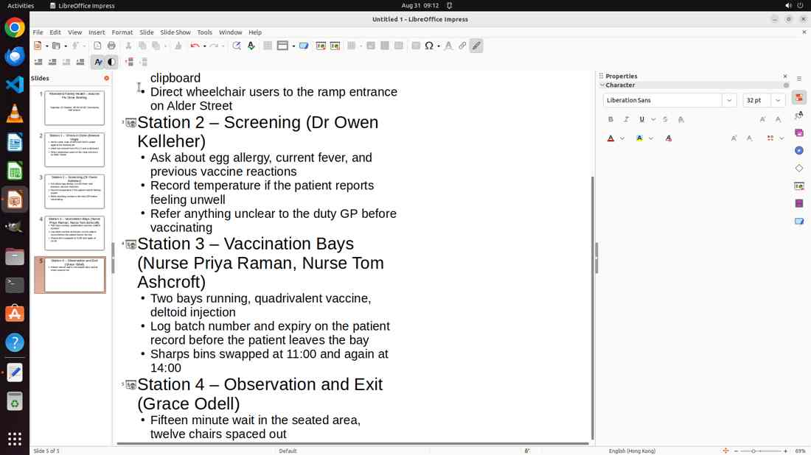
step 48 01:12:30
THINKINGFirst Station 4 bullet added. Now Return, type second bullet, Return, type third bullet. Let me do Return then type second bullet.
EXECUTED (pyautogui in VM)pyautogui.press("return")
step 49 01:12:41
THINKINGNow on a new bullet line under Station 4. Type the second bullet.
TOOL CALL<tool_call>
<function=computer_use>
<parameter=action>
type
</parameter>
<parameter=text>
Anaphylaxis kit and oxygen on the trolley by the fire door
</parameter>
</function>
</tool_call>
EXECUTED (pyautogui in VM)pyautogui.typewrite("Anaphylaxis kit and oxygen on the trolley by the fire door")
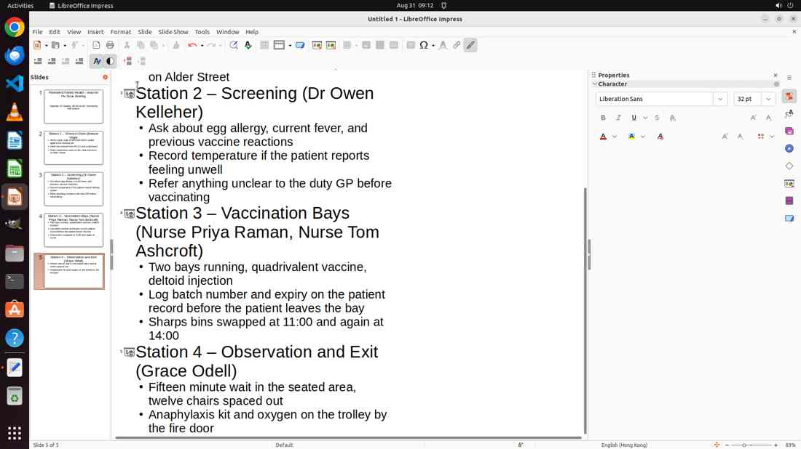
step 50 01:12:49
THINKINGSecond bullet added. Now Return, type third bullet (last one). Let me do Return then type the last bullet.